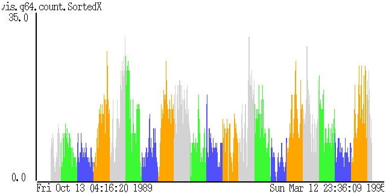

Clinical Science Example

Input Data
The input data:
- are gathered from medical records.
- contain attributes: date, and number of visits per day
for a respiratory disease.
The input file looks like:
1/1/90 1 1
1/2/90 6 10
1/3/90 7 14
...
Problem
We are trying to see if the disease exhibits seasonal patterns.
Visualization
click here to see our model of creating visualizations.
The visualization is created as follows:
- Map each record to a bar. Date is mapped to the X axis, and
number of visits to the Y axis. Color is used to represent season
of the year: green = Spring, blue = Summer, orange = Fall, and
gray = Winter.
Observations
- The disease is prevalent during seasonal changes, especially
between Fall and Winter, and between Winter and Spring.